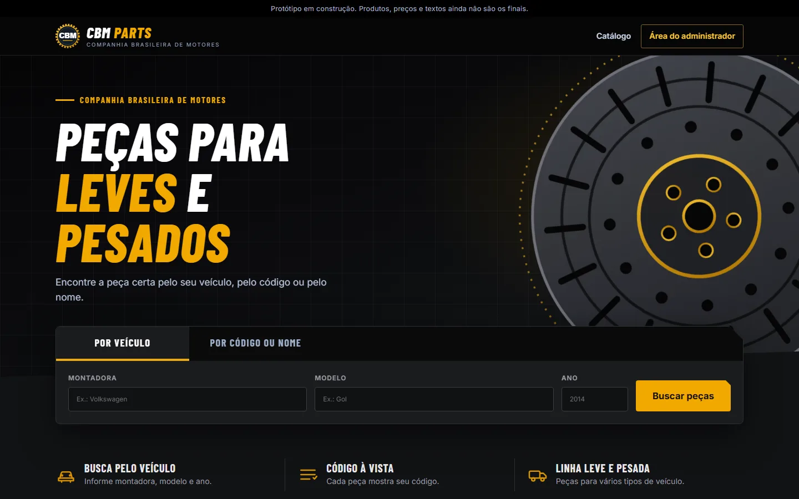

CBM Parts
Sistema web · catálogo de autopeças com painel
- O problema
- O cliente da loja precisa achar a peça certa pelo veículo, pelo código ou pelo nome. E o dono precisa cadastrar e corrigir as peças sozinho, sem depender de mim.
- O que foi feito
- Catálogo com busca por montadora, modelo e ano, uma página para cada peça e um painel com login onde o dono cadastra e edita. As peças ficam em um banco de dados. Preço e disponibilidade são combinados pelo WhatsApp, como o dono pediu.
